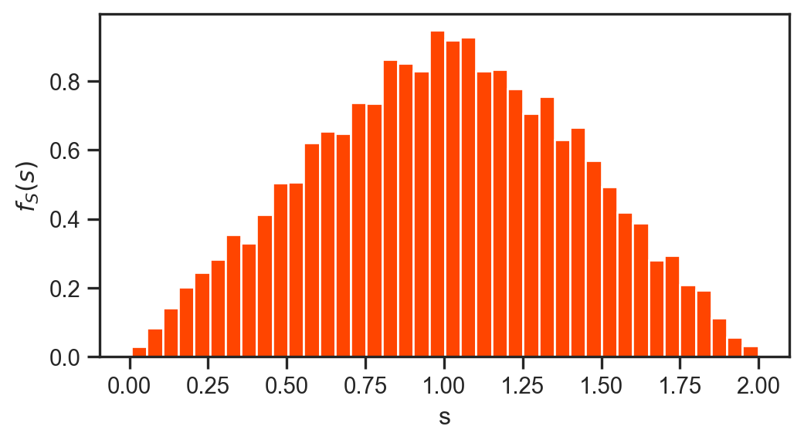

import numpy as np from scipy.stats import bernoulli, binom, exponimport matplotlib.pyplot as pltimport seaborn as snsfrom scipy.special import combsns.set(font_scale=1.0)sns.set_style("white")sns.set_style("ticks")palette = sns.color_palette('deep')
Problem 1
Find the probability density function of \(Y = h \left( X \right) = X^2\), for any \(y > 0\), where \(X\) is a continuous random variable with a known probability density function.
Solution
For \(y > 0\) we have
\[
F_Y \left( y \right) = p \left( Y \leq y \right) = p \left( X^2 \leq y \right) = p \left( - \sqrt{y} \leq X \leq \sqrt{y} \right)
\]
Following the bit of code above, let \(X\) be an exponential random variable with parameter \(\lambda\), i.e., \(f_{X} \left( x \right) = \lambda exp \left( -\lambda x \right)\) and \(F_{X} \left( x \right) = 1 - exp \left( -\lambda x \right)\). Let \(Y= sin\left( X \right)\). Determine \(F_Y\left( y \right)\) and \(f_{Y} \left( y \right)\).
Solution
From the event \(\left\{ Y \leq y \right\}\), we can conclude that for \(x = sin^{-1} \left( y \right)\) we have
\[
F_{Y} \left( y \right) = p \left( Y \leq y \right)
\]
\[
F_{Y} \left( y \right) = p \left( X \leq x \right) + \sum_{k=1}^{\infty} \left[ F_{X} \left( 2 k \pi + x \right) - F_{X} \left( \left(2k - 1 \right) \pi - x\right) \right]
\]
\[
F_{Y} \left( y \right) = p \left( X \leq x \right) + \sum_{k=1}^{\infty} \left[ 1 - exp\left( -\lambda x - 2 \lambda k \pi \right) - 1 + exp \left( \lambda x + \lambda \pi - 2 \lambda k \pi \right) \right]
\]
\[
= p \left( X \leq x \right) + \left[ exp\left( \lambda x \right) exp \left( \lambda \pi \right) - exp \left( - \lambda x \right) \right] \sum_{k=1}^{\infty} exp \left( - 2 \lambda k \pi \right)
\]
\[
= p \left( X \leq sin^{-1} \left( y \right) \right) + \left[ exp \left( \lambda sin^{-1} \left( y \right) + \lambda \pi \right) - exp \left( -\lambda sin^{-1} \left( y \right) \right) \right] \frac{exp \left( -2 \lambda \pi \right) }{1 - exp \left( -2 \lambda \pi \right)}
\]
This expansion uses the sum of a geometric sequence formula. The first term above is zero for negative \(y \in [-1, 0)\) and
\[
p \left( X \leq sin^{-1} \left( y \right) \right) = F_{X} \left( sin^{-1} \left( y \right) \right) = 1 - exp(- \lambda sin^{-1}\left( y \right) )
\]
for non-negative \(y \in [0, 1]\). Since \(F_{X} \left(0\right) = 0\), the cumulative probability \(F_Y\left( y \right)\) will remain continuous at \(y=0\). However, its derivative is discontinuous and we will be unable to derive an expression for \(f_{Y} \left( 0 \right)\). Hence, for negative \(y \in [-1, 0)\) we have
Let \(X\) and \(Y\) be independent and uniform between \(0\) and \(1\). Compute \(X + Y\). To set the stage for the problem, consider the code and plot below.
Code
X = np.random.rand(9000)Y = np.random.rand(9000)S = X + Y fig = plt.figure(figsize=(6,3))plt.hist(X+Y,40, density=True, color='orangered')plt.ylabel(r'$f_{S}(s)$')plt.xlabel('s')plt.show()

It appears we have a triangular distribution. In what follows we shall aim to derive this analytically.
Solution
From the Lecture notes, we have:
\[
f_{S} \left( s \right) = \int_{0}^{1} f_{X} \left( x \right) f_{Y} \left( s - x \right) dx = \int_{0}^{1} f_{Y} \left( s - x \right) dx
\]